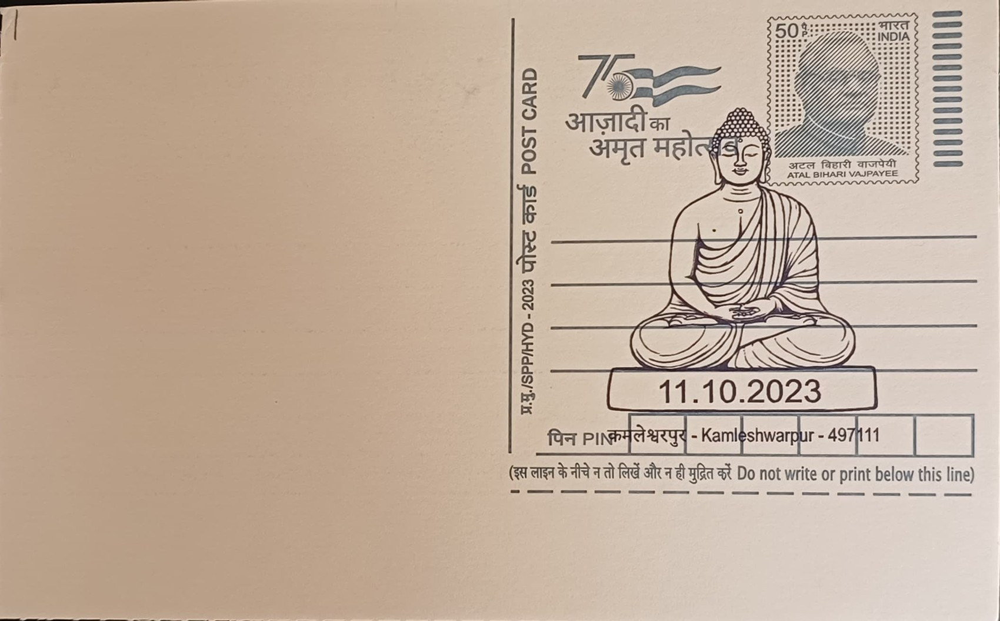

Old Tibetan Buddhist Monastery
पुराना तिब्बती बौद्ध मठ


The Tibetan Buddhist monasteries of Mainpat owe their presence in Surguja district to a resettlement scheme rather than to any older local legend. Following the Dalai Lama's flight into exile in 1959 after China's annexation of Tibet, the Government of India, in cooperation with the state government of undivided Madhya Pradesh, designated roughly 3,000 acres on the Mainpat plateau in 1962 as one of the earliest organised Tibetan refugee settlements in the country, intended to house around 1,400 displaced persons. The unusually cool, forested highland setting, rising to about 1,100 metres and locally dubbed a gathering of sixty-two smaller plateaus, was chosen specifically because it offered the refugees a climate closer to their homeland than the hot plains typical of the rest of Chhattisgarh.
As one of the oldest Tibetan resettlement colonies in India, predating the larger and better-known communities at Dharamshala and Bylakuppe in some respects, Mainpat holds particular significance within the diaspora's history as a demonstration that the rehabilitation model could succeed even in an unfamiliar central Indian geography. Its core identity rests on the twin presence of a functioning Tibetan Buddhist monastic community and a resettled lay population sustained by agriculture and handicrafts, making the site at once a religious institution and a living record of post-1959 refugee resettlement policy. Locally it has become known as Chhattisgarh's 'Mini Tibet,' a name that reflects both its cultural distinctiveness and its unlikely survival so far from the Himalayan belt.
The settlement's monastic architecture follows Tibetan Buddhist conventions transplanted onto Indian soil, combining whitewashed walls, sloped roofs, carved woodwork and multicoloured prayer flags with the practical materials available locally, producing what visitors and writers have described as an Indo-Tibetan hybrid style. Among the monasteries established by the refugee community, the Dhakpo (Thakpo) Shedupling monastery became the most prominent, built by Tibetan monks to carry forward the religious lineage of a 15th-century monastery in Tibet that had been destroyed during the Chinese takeover; it functioned for years as the settlement's principal seat of worship and teaching before later developments shifted some of its monastic activity elsewhere. Smaller temples and prayer halls elsewhere on the plateau continue to serve the settlement's everyday religious needs.
A notable episode in the monastery's modern history came when the 14th Dalai Lama visited the Dhakpo Shedupling community and, over several days of teachings in the mid-2000s, gave instruction on Lamrim texts and conferred an Avalokiteshvara initiation along with a long-life offering ceremony, an event still recalled within the settlement as a high point of its religious life. Some of this monastic lineage was subsequently reconstituted at a new site in Himachal Pradesh, but Mainpat's own monasteries and prayer halls have continued to operate for the resident community, maintaining the rituals, festivals and daily practices that have defined the settlement since its founding generation.
Today the Mainpat settlement, home to a Tibetan population that has grown from its original 1,400 refugees to roughly two to three thousand residents across subsequent generations, is administered through India's Tibetan settlement system in coordination with Chhattisgarh state authorities, who have increasingly promoted it as a cultural tourism destination alongside the region's waterfalls and volcanic crater sites. Visitors to the plateau can walk among its prayer-flag-strung monasteries, observe handicraft workshops, and see firsthand a Tibetan Buddhist community that has maintained its distinct religious and cultural identity for over six decades in the heart of central India, a role that keeps the settlement relevant both as a place of worship for its own residents and as a point of cultural exchange for the outsiders who come to see it.
| Date of Introduction | October 11, 2023 |
|---|---|
| Address | Branch Postmaster, |
| Kamleshwarpur BO, | |
| Surguja (dt.), Chhattisgarh - 497111. |